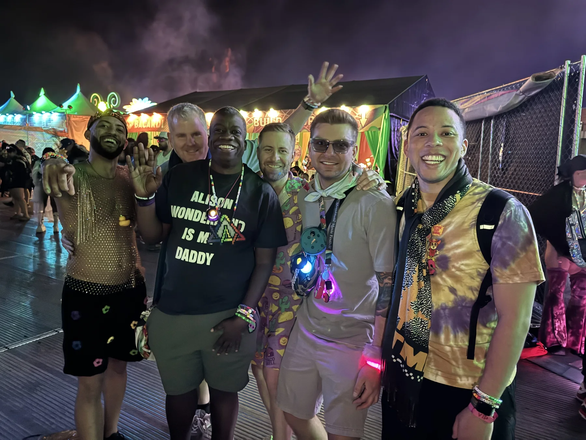
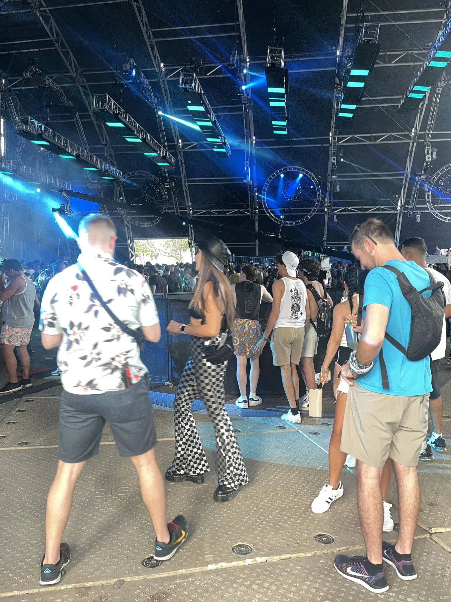

GOOD PEOPLE. LOUD MUSIC.A LIFE WELL DANCED.
FROM ME, TO YOU
This.
With you.
THE TICKETS GET US IN.
YOU MAKE IT MATTER.NEXT UP / PORTOLA ↘
YOU MAKE IT MATTER.NEXT UP / PORTOLA ↘
THE NEXT CHAPTER IS STILL OURS TO MAKE
Find me here.
No nights in this view yet. There is always another chapter.
THE THREAD THROUGH ALL OF IT
It’s always
been the people.
WE MADE IT OURS.
FOR SHANNON MURRAY
San Francisco.
The 1990s.
One of my oldest,
deepest friends.
All these years.
Still making memories.

With love, Gordon
LEAVE A LITTLE OF YOURSELF HERE
We make
the magic.
Every little wonder you find leaves a light.